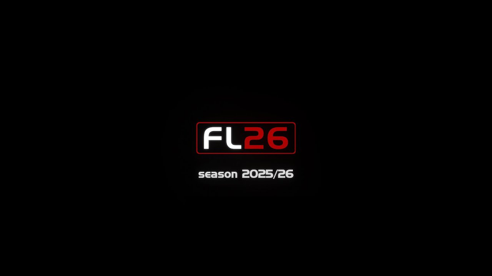

¿Qué es Football Life?
SP Football Life es una modificación gratuita (parche) basada en el videojuego PES 2021 que permite seguir disfrutando de distintos modos de juego, entre ellos Liga Máster y Ser una leyenda, de manera offline.
Origen
El proyecto fue iniciado en 2023 (con la salida de Football Life 2023) y con el paso del tiempo, fue incorporando nuevas ligas, estadios, kits y opciones de personalización, convirtiéndose en una alternativa muy elegida dentro de la comunidad de fútbol virtual.
Objetivo
Su objetivo principal es mantener viva la experiencia clásica de PES, agregando contenido actualizado y mejoras para los jugadores que prefieren jugar de manera offline.
Popularidad
Gracias al trabajo de la comunidad de modding, Football Life comenzó a ganar popularidad en los últimos años.
Actualmente, recibe actualizaciones cada temporada, incorporando nuevas plantillas, estadios y mejoras en la jugabilidad.
Gracias a esto, se convirtió en una opción muy utilizada por jugadores de la comunidad hispana que buscan una experiencia diferente a eFootball o FIFA.
Enlace a su página web: Smoke Patch
Galería de imágenes
